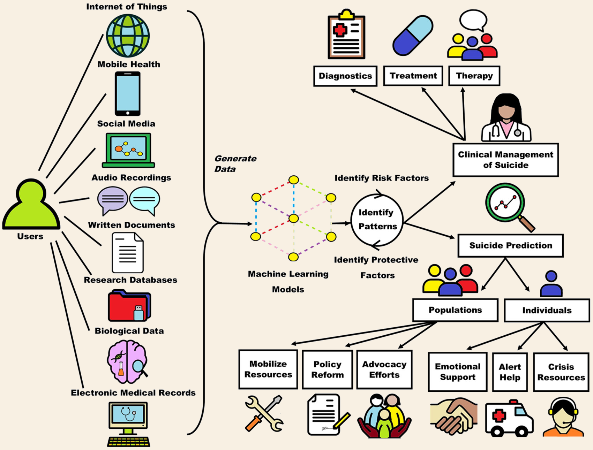

Opportunities of the Use of AI Powered Tools and Initiatives for Suicide Prevention

Fig. 3: Logo for REACH VET (Recovery Engagement and Coordination for Health)
Mental health services across our world are stretched thin. At-risk individuals attempting to seek help face long waiting times, limited access to professionals, or live in areas where there is no access to these resources at all (Greaves, 2024). However, AI powered tools provide us with the opportunity to overcome these limitations by providing low cost, fast, accurate, available and accessible healthcare (Hotman, 2020). Suicide prevention goes hand-in-hand with prediction, and AI brings about new and transformative opportunities to support this effort. There are two types of AI tools used in the context of suicide prevention/prediction; social and medical (Hotman, 2020).
There are many benefits to the use of AI for suicide prevention, one of the opportunities it brings is real-time personalization and support. Many individuals view seeking help as burdensome, they’re afraid of being judged, medicated or hospitalized (Hotman, 2020). A study on the experiences of 13 UK-based crisis service volunteers tells us that individuals, when seeking help feel as though they’re imposing their problems on others, often apologising. (Greaves, 2024). Fear of seeking help is a serious problem especially when it comes to suicide ideation, it prevents people from getting the support that they need. AI can be used to overcome this in the form of conversational agents who use NPL (Natural language processing) to simulate real life, guilt-free conversations (Fonseka et al, 2019). These are available 24/7, with fast responses and no waiting lists. Large language models such as Open AI’s Chat GPT can deliver near human performance, and in some cases can outperform traditional systems due to their consistency with best practice. This helps reserve human support for those that desire it. It also lifts the stress of burdening someone with your problems and eliminates the fear of judgement, helping individuals be more honest (Greaves, 2024). Some conversational agents also have added features such as facial expressions and body language analyzation to signal when human interaction in necessary (Fonseka et al, 2019).
Fig. 4: Graphic of how information is collected to be analysed by AI models to generate predictive and preventive solutions.
“As of February 2025 ... 5.24 billion, or 63.9% of the world's population, were social media users.” (Statistica, 2025). With so much of our world constantly interacting with digital spaces, integrating AI into social media platforms as tool for mental healthcare is an opportunity for early intervention, wider reach, and more accessible support. AI algorithms in sites such as YouTube, Instagram, Twitter, Facebook, etc, constantly monitor and remove self-injury and suicide-related content to prevent harm. This is important as evidence suggests that publicizing suicide without caution can increase risk of imitation and/or normalization. However, it is important to consider that AI often lacks the nuanced understanding needed to distinguish the seriousness of such expressions. In addition, some platforms also utilize AI conversational agents which “piggyback off the sites’ instant messaging interface" to interact with users about their interests, mood, etc to analyse their behavioural patterns and provide suggestions for evidence-based tools to help them (e.g. Facebook) (Fonseka et al, 2019).
The use of AI in above examples are social tools offering quick support for individuals (Hotman, 2020). Beyond individual use, AI in the form of medical suicide prediction tools can help us identify wider at-risk groups which offers opportunities such as policy reform and mobilizing resources for these populations (Fonseka et al, 2019). Despite decades of research in suicide prevention, it hasn’t improved in the past 50 years, AI offers a new opportunity for early detection of these risks on a larger scale (Hotman, 2020). “Machine Learning and AI have been used to generate predictive algorithms that can determine the effects of risk (and protective) factors on suicide outcomes, predict suicide outbreaks and identify at-risk populations.” (Fonseka et al, 2019). These algorithms are layered mathematical models which collect data from various sources such as Electronic Medical Records (EMRs), social media, wearable devices, internet search patterns, clinical notes and much more (Hotman, 2020). The data analysed by these algorithms can be used to generate predictive models that complement the currently limited mental health resources by becoming decision supporting tools (Hotman, 2020). One successful example is US’s REACH VET program, which offers support and optional psychological consult for veterans identified as at risk. Within just the first year of its implementation, there was a 4% reduction in suicides (250 less) “than what would have been expected from previous years” (Hotman, 2020). By converting complex data into actionable insights, these AI models provide us with the opportunities to make suicide prevention efforts more scalable allowing support to reach larger populations and far beyond what human-led systems have achieved. Though it is worth mentioning that ‘going off the book’ of such models, e.g. hospitalizing or forcefully providing support can put even more psychological pressure on the individuals.
Taking these benefits into consideration, we believe the opportunity of AI powered tools for suicide prevention lies in its ability to assist and complement rather than replace existing human-led systems and resources, helping fill in the gaps and enhancing the reach and response of existing mental health sources.